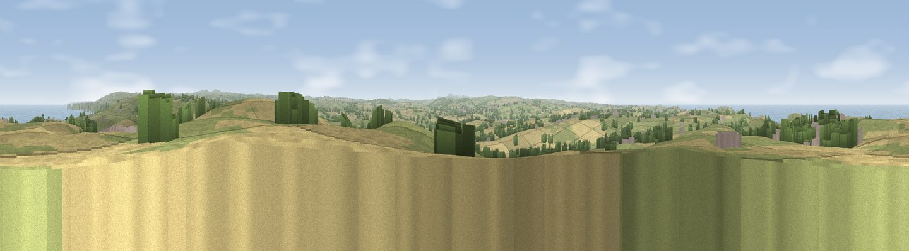

Viewpoint near Port Isaac
#1050 in England · top 3% of its area beats it · near Port Isaac · access?Where it is
The exact computed spot (SX 02775 80588). Click the marker for map links.
Public access: no public right of way or access land is recorded at this exact spot — it may be on private land. Computed from Natural England's CRoW access layer and OpenStreetMap rights of way — not the legal definitive map. Always verify locally.
The view, rendered

A 360° render of this exact spot computed from the terrain model, tree cover and land cover — summer colours, afternoon light, calibrated against photographs of famous viewpoints. Real trees, hedges and buildings will differ in detail.
The panorama
Grey silhouette: terrain skyline in each direction (720 bearings, Earth curvature and refraction included). Dashed green: skyline with trees (+15 m) and buildings (+8 m) as obstacles. Blue strip: how far the ground is visible on each bearing.
Where the view opens
Wedge length = distance to the farthest visible ground on that bearing (vegetation-aware). Rings at 10, 25 and 50 km.
What fills the view
49% grassland · 31% water · 14% cropland · 5% woodland · 1% built-up
Angular shares of the visible panorama (visual magnitude), not map area. Landscape diversity 0.51 (0–1 Shannon).
Key numbers
More beautiful places nearby
The staircase of upgrades: each row has a higher view potential than everything closer. Driving times are estimates from straight-line distance, calibrated against real road routing — check an actual route before setting out.
| Place | Direction | Drive | Score |
|---|---|---|---|
| Viewpoint near Boscastle | NNE · 10 km | ~20 min | 82.0 |
| Viewpoint near Boscastle | NNE · 11 km | ~21 min | 84.3 |
| Viewpoint near Boscastle | NNE · 11 km | ~21 min | 85.2 |
| Viewpoint near Boscastle | NE · 16 km | ~28 min | 85.8 |
| Viewpoint near Lesnewth | NE · 16 km | ~29 min | 87.7 |
| Viewpoint near Crackington Haven | NE · 17 km | ~30 min | 88.1 |
| Viewpoint near Combe Martin | NE · 88 km | ~112 min | 88.9 |
| Holdstone Hill | NE · 89 km | ~114 min | 90.2 |
50.59162, -4.78779 · source: screening · position refined by local search. Computed location — check access rights before visiting.